Documentation
Script Reference
Forum
Documentation
Script Reference
Forum
Remember to save your scene often!
Note: If you need more detailed information on creating a camera, click here
The first thing we're going to do to make our game is create the game camera. The camera allows the player to actually see the game - without the camera you see nothing! Although Unity has already provided us with a camera - 'Main Camera' in the Hierarchy window - to make life a little bit easier for ourselves we are going to use the 2D Toolkit camera which has already been configured to work with 2D scenes.
Delete the default Unity camera - Main Camera - as we will be using the tk2d camera from now on, and having both in the scene can cause conflicts unless configured properly.
Before we create the tk2dCamera, we will set up our Game Window resolution so that the tk2d camera will be able to automatically pick up the it's settings. In the top corner of the game window will be a small drop-down tab, click on that and select 'Standalone'. If you can't see this setting, you're probably not on the correct build platform. Switch it to PC, Mac and Linux Standalone and select Standalone.
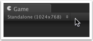windowstandalone.png">
In the Hierarchy window, click on 'Create > tk2d > Camera'. Or you can do this through the Unity main menu bar by clicking on 'GameObject > Create Other > tk2d > Camera'. The default name for the camera will be tk2dCamera, which you can change if you like.
The tk2d Camera will be added to the Hierarchy window, but both the Scene window and the Game window will be empty as there are currently no other game objects to show! Ensure the tk2dCamera is selected in the Hierarchy window and you can view the settings for it in the Inspector window. If the game window has not been set to 'Standalone' then you will get some warnings as the camera has not been able to detect some of the settings. It is easier to set the camera up with the game window in 'Standalone' mode, but if you want to get more technical then check out the notes box below.
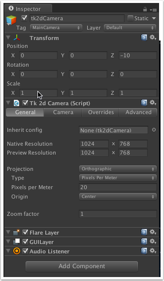inspectorstandalone.png">
You can choose to set your own Preview Resolution (see notes below) by having the Game window set to 'Free Aspect' (which can be selected from a drop-down box in the top-left of the Game window), ensuring that the 'Force Resolution' box is checked and then entering a height and width. Or, by selecting a screen size ratio (e.g. 4:3, 16:9) from the Game window, a 'Preset' drop down box will appear in the Camera Inspector allowing you to choose a device that uses that apsect ratio. However, for this tutorial I am going to be using the 'Standalone' with my Standalone resolution set to 1024 x 768.
A brief explanation is probably in order here for the 'Tk 2d Camera (Script) settings'; the 'Native Resolution' value is the resolution your game is being developed at, so if you develop your game at 1024 x 768, and you play the game on a PC or other device with its resolution set to 1024 x 768 then you will have 1-to-1 pixel mapping and fit perfectly.
With the 'Preview Resolution' you can see what your game will look like if played on a device with a different resolution to what the game has been developed at, e.g. if your 1024 x 768 game is played on a 960 x 640 screen. Camera overrides will be used to configure what tk2dCamera should do in that case. The preview resolution is normally selected by setting the game window resolution.
The 'General' tab in the 'Tk 2d Camera' component should already be selected. Change the 'Native Resolution' settings to what you want to develop your game at; I will be using 1024 x 768 as this is the resolution the game is designed for. Remember, if you choose different settings to mine here, then you may need to adjust some of the values I use later on when scaling and positioning objects.
If you select 'Standalone' in the Game window for your resolution, your 'Preview Resolution' field will default to that value. You can change the Standalone screen resolution by going to 'File > Build Settings...' in the menu bar and then clicking the 'Player Settings...' button. My Game screen Standalone resolution is also set to 1024 x 768, which basically means how I arrange the game objects in the Scene window will be how they look in the 'Game' window when I run the game. This assumes you've got the Unity build platform set to PC, Mac and Linux Standalone.
The Projection type should already be set to 'Orthographic', so if it isn't use the drop-down box to set it to that. The Pixels per Meter value isn't too important for us here as our game is just going to be a single screen with no scrolling or anything, so just set this value to '1'.
The Origin field is where the positioning of game objects are measured from e.g. If 'Center' is chosen here, then game objects to the left of center will have negative X-position values and objects to the right of center will have positive Y-position values (and similarly up/down for the y-position values). I prefer to have my origin at the bottom left of the screen, so if it isn't already selected, select 'Bottom Left' from the drop-down box in the Origin field. The settings for the camera should end up something like this...
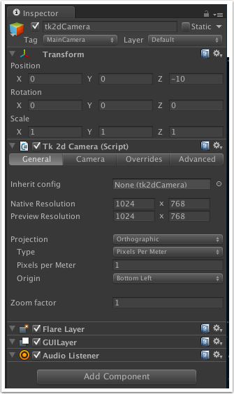settingscomplete.png">
If you click on the 'Camera' tab there are more settings you can change. One or two things of note here;
-The 'Background color' value will show for any transparent areas of the game, and you can change the color here by clicking on the color box and selecting a new one.
-The Clipping Planes values define the areas of the game that will be 'picked up' by the camera; the default values here are Near: 0.3 and Far: 10. As the default Z Position value for the camera is -10, any game object that has a Z value of greater than zero (i.e. -10 Position + 10 Far value) or less than -9.7 (i.e. -10 Position + 0.3 Near Value) will not be drawn to the screen. In order for us to have more leeway in where we place are objects, increase the 'Far' value to 25.
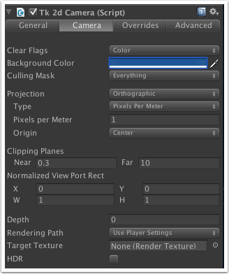settingscamera_tab.png">
We don't need to worry about the other settings for now.
In the Project window, there should be the Mole assets folder that you imported earlier. If you navigate to the Textures folder within that, a list of all the images will be displayed. We will be using these to provide the graphics to our game.
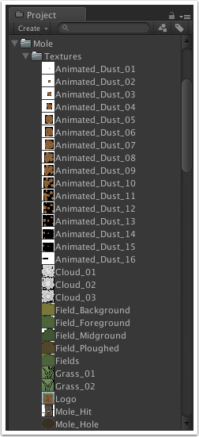
In order for our graphics to be usable within the project, we are going to gather them together in a Sprite Collection, or more specifically several sprite collections.
In the Project window, click on 'Create > Folder' and a New Folder will appear. Rename this folder 'Sprite Collections'. Although this step isn't necessary, it will help keep our project organized which will become more important the bigger and more complex your games become.
Select the newly created Sprite Collections folder and click on 'Create > tk2d > Sprite Collection', and within your Sprite Collections folder, a SpriteCollection object will appear.
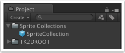
Select the SpriteCollection object and change the name to 'Land' as this Sprite Collection is going to hold land images. It isn't strictly necessary to have different sprite collections, but again will help us keep our project organized.
Note: Although our game is quite simple and small, if you are doing bigger and more complicated games it is more important to think about which sprites you want to group together in a collection. Unity has a built in dynamic batching system that is automatically used to reduce draw calls, and the most efficient way to organize the sprites are by Z value. Overlapping sprites from different collections increase draw calls. Keep sprites from the same sprite collections grouped together.
In the Inspector window, click on 'Open Editor' and the SpriteCollection window will appear which will allow us to move our sprites into our sprite collection. To make it easier to drag the sprites to the window, dock the window by dragging the tab to the menu bar.
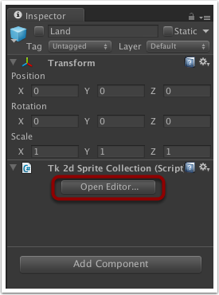editorbutton.png">
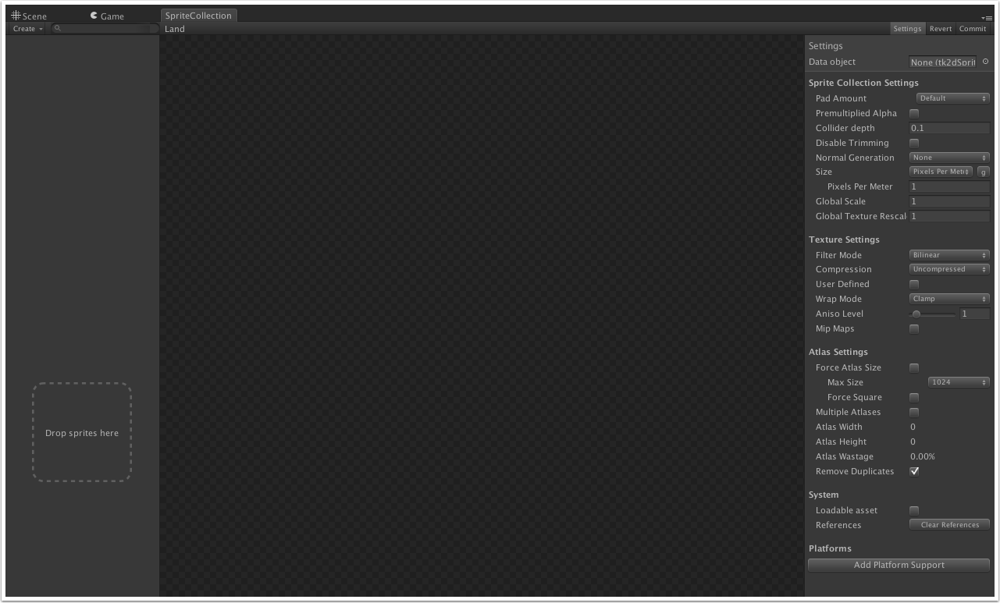
In the Project window, navigate to the Mole assets folder > Textures and select and drag the following sprites to the SpriteCollection window where it says 'Drop sprite here'. (Note the sprites can be moved one at a time, or several can be selected at once and moved):
In the Sprites window, you can select any of the sprites that have been moved there and its image will be displayed in the main window.
Still in the SpriteCollection window, click on the 'Settings' button which will affect all the sprites in this collection. 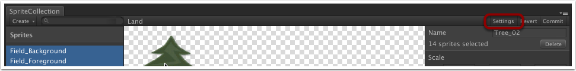
In previous version of 2DToolkit you would have had to select the 'Use tk2DCamera' check box here in order to make the game objects appear correctly on screen. However, in this version of the 2DToolkit, the sprite collection will automatically detect that a tk2DCamera is being used. Click on the 'Commit' button to save the changes we've made.
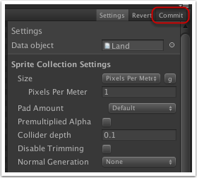
Oops, we have gotten a pop-up warning us that it was unable to fit textures in the requested atlas area. An atlas is a collection of textures/images that are joined together into one image. This is primarily done for performance purposes as several textures can be sent to the graphics hardware at once. Click on the 'Ok' button.
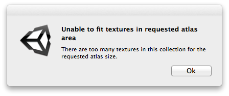
There are two ways we can tackle this issue: either by increasing the size of the Atlas under Atlas settings, or by splitting up bigger images into smaller images, or even a combination of the two.
If we click on any of the sprites in the sprite window, we can see at the bottom right of the main window the size of image. By going through the various sprites, we can see that the 'Field' ones are large in size.
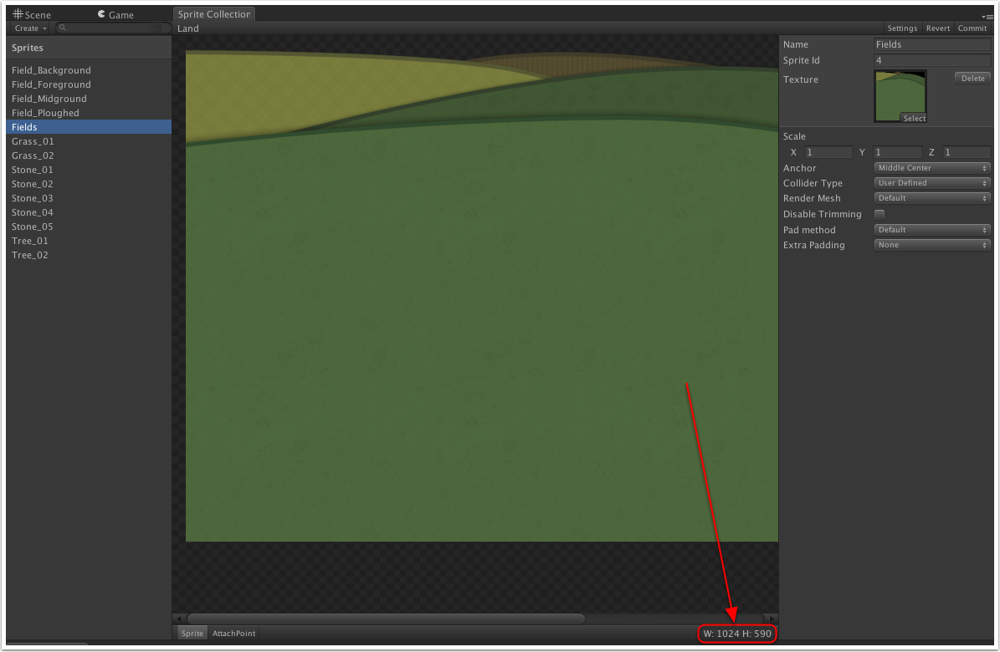imgsize.png">
Multi-select all of the Field sprites, then in the right-hand window change the 'Render Mesh' value from 'Default' to 'Diced'.
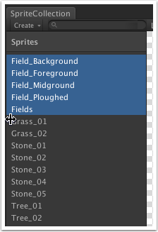multiselect.png">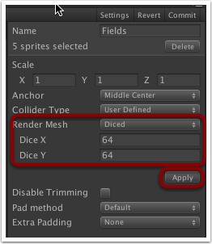dice.png">
This will provide us with 2 values we can change: Dice X and Dice Y. Change both of these values to 64 and click 'Apply'. This will split each of the images up into 64 x 64 blocks but don't worry - the 2d Toolkit takes care of joining them back up together when displaying them in the game. The following images show what the atlas looks like before and after a dice:
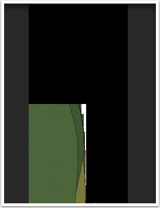nodice.png">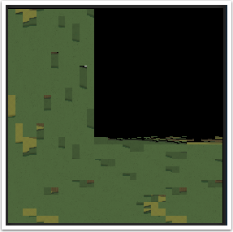
As you can see, the sprite is stored as the original image in the un-diced atlas, whereas in the diced atlas it has been chopped up into pieces.
Click back on 'Settings' and under 'Atlas Settings' change the Max Size value to 2048 and click on 'Commit' again. This time an atlas should be created. For other sprite collections you may need to experiement with the Dice and Atlas Size settings in order to get the images to fit.
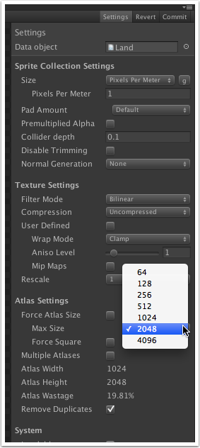atlassize.png">
Repeat from step 2 onwards to create more sprite collections that contain the following:
Mole: Mole_Hit, Mole_Hole, Mole_Hole_Mud, Mole_Normal
Dust: Animated_Dust_01 to Animated_Dust_16
* Remember to commit your changes! *
Now that we've created our sprite collections we can start putting them into our game.
In the Hierarchy window, click on 'Create > tk2d > Sprite'. The initial sprite will more than likely defaultly select one of the Demo sprites that come with the 2D Toolkit.
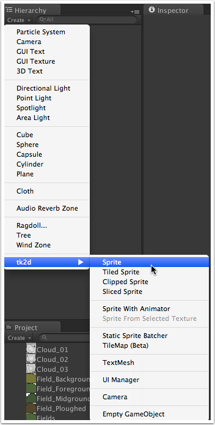
Select the Sprite object in the Hierarchy window (if not already selected), and in the Inspector window change the Collection value to 'Land', which is on of the sprite collections we created earlier, and the Sprite value to 'Fields'. If you are feeling artistic, feel free to use the individual field sprites (Field_Background, Field_Foreground, Field_Midground and Field_Ploughed) to make your own landscape, but for simplicity I am going to use the ready made 'Fields' sprite. Change the name of the sprite if you wish (I changed mine to 'Landscape').
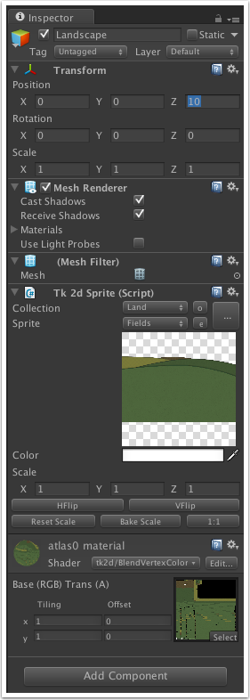spriteinspector.png">
The Z value under 'Transform > Position' for a game object denotes how close or far away game items are. The tk2d camera has a default 'Z' value of -10, so in order to be able to see our landscape, the Z value of it needs to be greater than -10 as the greater the Z value, the farther away the object is. As the landscape is going to be a background image, set the Z value for it to 10.
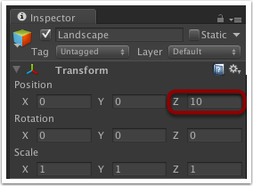backgroundz.png">
You may also need to adjust the 'Transform > Position' X and Y values, which will move the sprite left/right and up/down on the screen. By default, the anchor for the Field sprite is set to Middle Centre i.e. the center of the sprite. So an X and Y value of 0 will mean the centre of the landscape sprite is actually at the bottom-left of the game screen (0, 0). You may wish to work with a different anchor which you can do by clicking on the 'e' (edit) button under Tk 2d Sprite. By selecting this and clicking on the 'Anchor' button, this allows us to change the anchor to something else. If we select 'Lower Left' (remember to commit!), a Transform Position of X: 0, Y: 0 for the sprite will mean the lower-left corner of the landscape will be the lower left of the game screen.
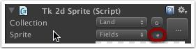spriteeditbutton.png">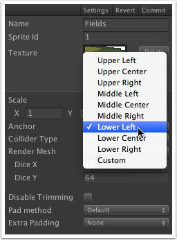edit_anchor.png">
Follow the above steps 1 to 5 for different sprites to add sky, trees, grass, rocks and anything else you want to make up your background. Remember to adjust the Transform Position 'Z' value to get the ordering correct - the higher the Z value, the further away from the camera it will be, and change the anchors on the sprites if it makes placing the image easier (e.g. you may want the sky sprite to have an anchor of 'Upper Left'). Keep going until you have something like this...
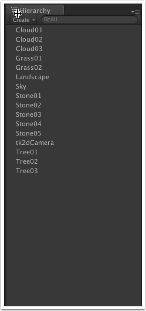inhierarchy.png">
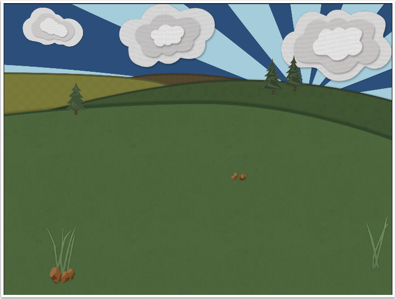minusmoles.png">
As more and more sprites get added to the scene the performance of the game is going to be negatively affected, but as we aren't going to be interacting with any of the background sprites we can combine them all into a Sprite Batcher. This effectively joins the sprites into one large mesh so it can be drawn in one pass per material.
To do this, in the Hierarchy window click on 'Create > tk2d > Static Sprite Batcher'. Feel free to change the name of it if you want; I will be calling mine 'Background'.
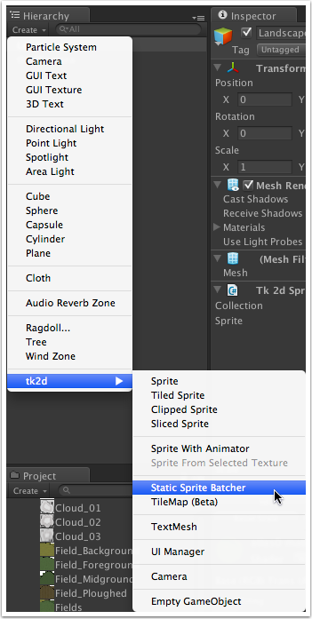staticsprite_batcher.png">
In the Hierarchy window, drag each of the background objects you have created (by this point, everything but the camera) onto the Static Sprite Batcher you have just created.
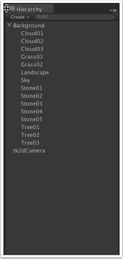instatic_batcher.png">
Once you have added everything you want to the Static Sprite Batcher, ensure it is selected in the Hierarchy window and click on the 'Commit' button in the Inspector window.
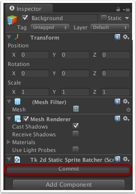inspectorwindow.png">
All of the individual sprites in the Hierarchy window will disappear and only the Static Sprite Batcher will be present.
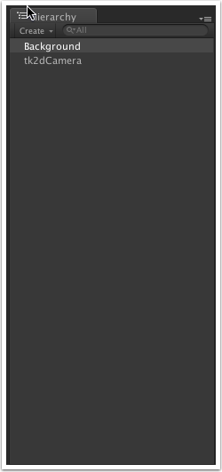afterbatcher_commit.png">
However, if at any point you need to make changes to any of the sprites simply select the Static Sprite Batcher and click on the 'Edit' button in the Inspector window. The individual sprites will be listed again in the Hierarchy window and changes can be made to them.
Now that we have our background, we will add the moles for us to whack...
Actually, each 'mole' is going to consist of 3 things: the mole, the hole, and dirt around the hole. We will be treating these as a 'unit' essentially.
First create a hole... In the Hierarchy window click on 'Create > tk2d > Sprite'. Name the sprite 'Hole' and select the Mole_Hole sprite from the 'Mole' collection, scale it as necessary and position it so it is roughly in the middle of the field. With my camera settings of 1024 x 768, I changed the X and Y position to 512 and 260 respectively. Remember to change the Z value as well so the hole is in front of the your background image.
Next, ensure that the Hole is selected in the Hierarchy window, then click on 'Create > tk2d > Sprite', select the Mole_Hole_Mud sprite from the Mole sprite collection, scale it, name it and position it so that it is around the front of the hole. As the dirt is a 'child' of the hole you created in step 1, all Transform values for the dirt are relative to the hole e.g. X: 0, Y: 0 values for the dirt will now be the center of the hole rather than the bottom left corner of the game screen (depending on the anchor position of the sprite). The Z position of the dirt will also be relative to that of the hole, so make the Z value of the dirt less than zero and it will appear in front of the hole. Note, you may still see the dirt in front of the hole if you leave the Z value at zero, but it is dependant on the order in which the game objects are drawn which you cannot depend on. Therefore to ensure the dirt is in front of the hole, give it a small minus Z Position value.
Now for the mole itself... As the mole is going to pop in and out of the hole we face a problem: when the mole moves down the screen you will still be able to see it underneath the hole. Therefore, to give the illusion of the mole disappearing into the hole, we are going to use a clipped sprite. With the hole selected in the Hierarchy window, click on 'Create > tk2d > Clipped Sprite', and select the Mole_Normal sprite from the Mole collection.
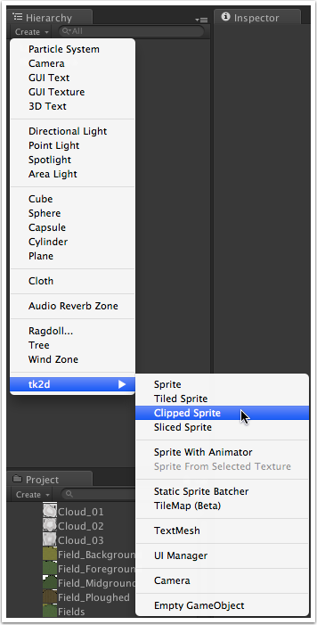clippedsprite.png">
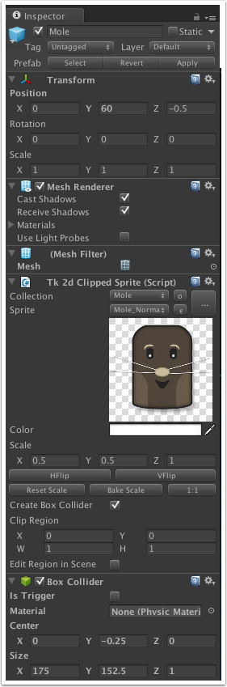spriteinspector_mole.png">
Adjust the Position of the sprite so the mole is out of the hole (with my settings, a Y value of 60 worked), and adjust the Z value so the mole is in front of the hole but behind the dirt. The Z value should be less than zero but higher than the Z value you chose for the dirt. Also, tick the 'Create Box Collider' box - we will use this box collider to tell when a mole has been whacked. You should end up with something like this:
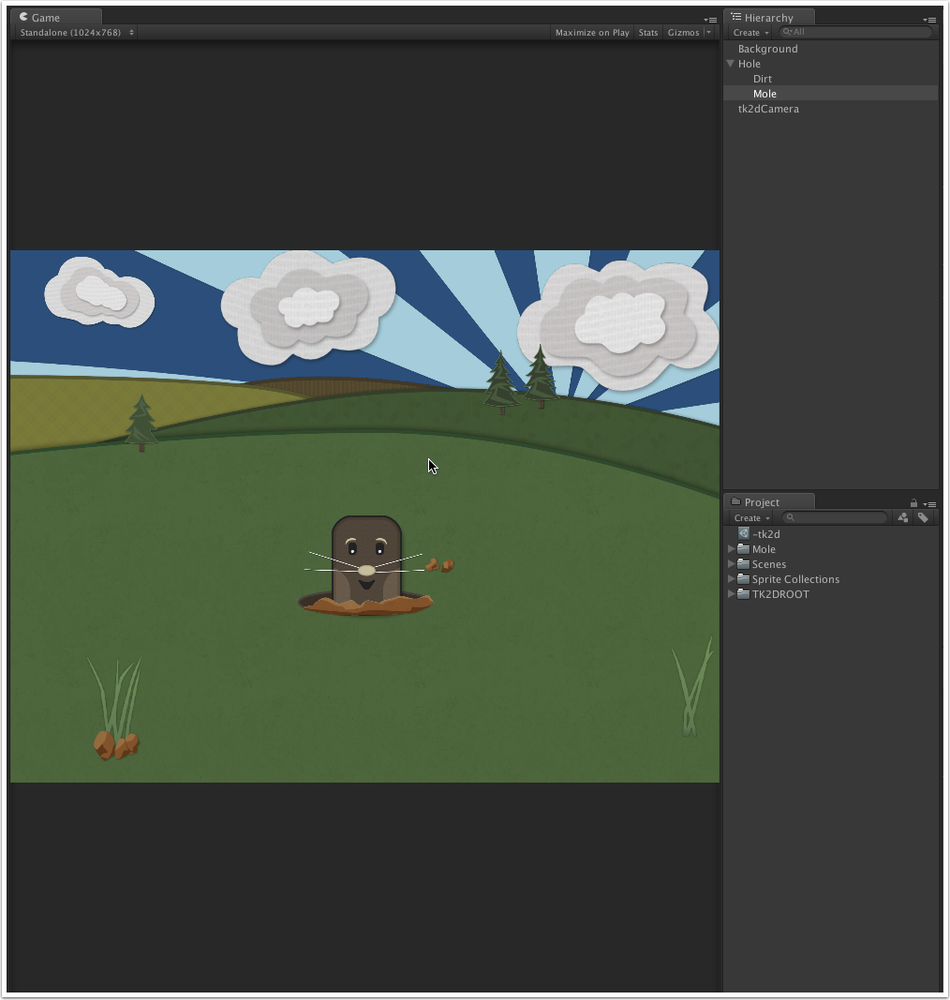holein_hierarchy.png">
If you click on the Unity Play button, the game plays but nothing happens. Pretty boring, huh? We need to add some scripting to the Mole sprite in order to make it do something... (Don't worry, we are going to add more moles later...).
You can download the whack-a-mole package with what we have done so far from here if you want to compare your project with ours.